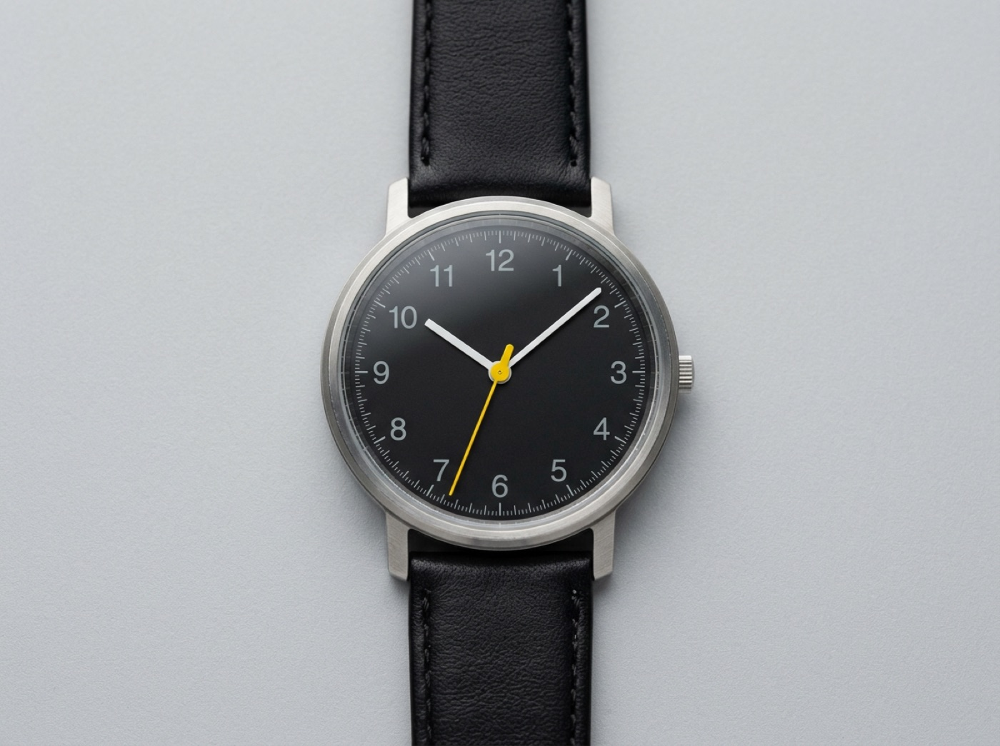
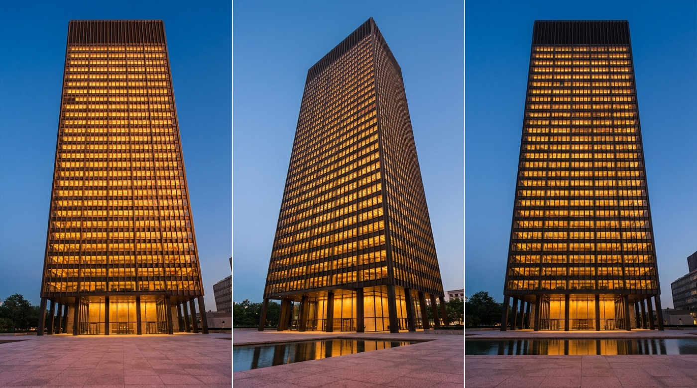

Type with nothing else
Strip an object down until type is the only ornament left, and you find out whether the typography was ever any good. Dietrich Lubs' watch face is an interface with exactly one job, done entirely with numerals, weight, and spacing.

No bezel decoration, no logo flourish. The typeface, its sizes, and its spacing are the whole interface.
Rhythm is set, not drawn
A column of well-set text and a Miesian curtain wall work the same way: one module, repeated without exception, until repetition itself becomes the beauty.

Bronze mullions on one beat for 38 stories — leading and stem rhythm at architectural scale. Squint: it reads like a perfectly set column of type.
When type is the whole interface
Three software moments made the same bet from three directions: a government, a writing tool, a phone.
GOV.UK · 2012. Ben Terrett's team shipped a state's entire interface as black text on white with one blue and one green. Set here in your system sans standing in for Margaret Calvert's New Transport. Nothing to admire except that everything is instantly legible — which was the point.
Writing is rewriting. The first draft only exists so that the sentence you are writing right now is the only one that matters and every other line waits its turn in grey.
iA Writer Focus Mode · 2010. Oliver Reichenstein removed font menus entirely: one typeface, one size, zero options. Restraint shipped as a feature. The same author's 2006 essay said it plainly: web design is 95% typography.
- train tickets booked
- two missed calls
- dinner moved to nine
- last synced just now
Windows Phone 7 "Metro" · 2010. Albert Shum's team deleted the chrome: oversized light type is the navigation, the cropped word at the edge is the affordance to swipe, one red is the alert channel. Type carried hierarchy, wayfinding, and brand at once.
One ratio, one measure
Sizes picked ad hoc wobble; sizes derived from a single ratio agree with each other. And a line of body text wants 45–75 characters — Bringhurst's comfortable measure — before the eye loses the return path.
A modular scale (ratio 1.25). Five sizes from one decision. Tim Brown's "More Meaningful Typography" (2011) formalized for the web what Bringhurst's Elements (1992) prescribed for the page.
Twenty-two characters per line chops every sentence into confetti.
Sixty-some characters per line is where reading disappears as an act and only the meaning is left — the measure this very course is set to.
Past ninety characters the eye finishes a line, sets off back across the page for the start of the next one, and arrives at the wrong row — the silent fatigue of most intranets and admin panels ever shipped.
The measure, live. Same type, three widths. Only the middle one honors the content.
Templates outlive their authors
One typeface, centered titling, fixed bands: a template strict enough to carry hundreds of books, recognizable from across a shop.
A whole house navigated by bare numerals in one weight; a circle around one number names the line you are holding. Type alone as wayfinding.
Typography exists to honor content: pick one scale, keep the rhythm, and the type itself becomes the interface.
In your systems
Every one of your five systems already leads with type — Freight in racing-green, Fraunces in neo-tactile and foldwell, Literata here in calm-ink. The pointed question is the scale: open racing-green's tokens and count the distinct font sizes that actually ship. If the number is above seven, sizes are being picked, not derived. Could each system state its ratio in one line, the way GOV.UK could?
Copywork a masthead: rebuild the iA.net article header or an NYT headline block in plain HTML/CSS, matching size, weight, and leading entirely by eye. Then inspect the original and measure how far off you were. The gap between your eye and the ruler is the lesson — it shrinks every time you do this.
Vocabulary
- Modular scale — sizes derived from one ratio, not picked ad hoc (Bringhurst 1992; Tim Brown, A List Apart, 2011).
- Measure — 45–75 characters per line for comfortable reading (Bringhurst 1992).
- Vertical rhythm — leading as the page's baseline grid (Bringhurst 1992; Müller-Brockmann 1981).
- Typeface restraint — a lifetime of work in a handful of faces (Vignelli Canon, 2010).
Sources: Robert Bringhurst, The Elements of Typographic Style (1992) · Oliver Reichenstein, "Web Design Is 95% Typography" (2006) · Massimo Vignelli, The Vignelli Canon (2010) · Tim Brown, "More Meaningful Typography" (2011).